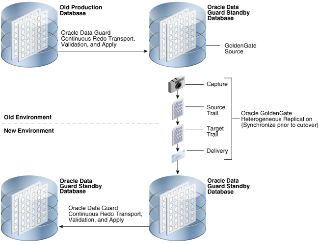

5 Oracle Database High Availability Solutions for Planned Downtime
Planned downtime can be just as disruptive to operations as unplanned downtime. This is especially true for global enterprises that must support users in multiple time zones, or for those that must provide Internet access to customers 24 hours a day, 7 days a week.
In the past, planned downtime was necessary to perform the following activities:
-
Periodic maintenance—such as patching or reconfiguring the system to update a database, application, operating system, middleware, or network
-
New deployments—such as to perform major upgrades or new rollouts of the hardware, database, application, operating system, middleware, or network
This chapter contains the following topics:
Topics:
5.1 High Availability Solutions for Migration
Table 5-1 describes at a high level the high availability solutions for migration. Each solution is described in the sections following the table.
Table 5-1 High Availability Solutions for Migration
| Migration Type | Oracle Recommended Solution | Solution Description | Outage Time |
|---|---|---|---|
|
Migrate database to a different platform |
Oracle Data Guard, Data Pump, Recovery Manager, and Oracle GoldenGate |
Seconds to minutes for Data Guard or Oracle GoldenGate Minutes to hours for Data Pump and Recovery Manager |
|
|
Migrate database to a different character set |
Seconds to minutes |
||
|
Migrate to pluggable databases or another pluggable database Remote cloning of pluggable databases |
Data Pump, Recovery Manager, and Oracle GoldenGate SQL*Plus |
Seconds to minutes for GoldenGate Minutes to hours for Data Pump and Recovery Manager Minutes to hours for remote cloning of pluggable databases |
|
|
Migrate storage |
No downtime for Oracle ASM Seconds to minutes for Data Guard |
||
|
Migrate database from a single-instance system to an Oracle RAC cluster |
Migrating a Database from a Single-Instance System to an Oracle RAC Cluster |
Seconds to minutes |
Topics:
5.1.1 Platform Migration
Migrating a database to a different platform is required when you move an existing database to a system that runs a different operating system than the current system. For example, database migration is required when moving a database from Microsoft Windows to Linux, or from AIX or HP-UX to Oracle Exadata Database Machine running Oracle Linux. Database migration options are highly dependent on the source database platform and source database version. Database migration to a different platform is accomplished with one of the following solutions:
-
Data Guard heterogeneous physical standby
-
Data Pump full transportable export/import
-
Data Pump tablespace transportable export/import
-
Recovery Manager cross-platform transport of a PDB using inconsistent backups
-
Recovery Manager cross-platform transport of tablespaces in a PDB
The following features can be used in combination with the migration solutions previously described to reduce database migration downtime:
-
Recovery Manager cross-platform inconsistent tablespace transportation
-
Recovery Manager cross-platform transport of a PDB using inconsistent backups
-
Oracle GoldenGate
Topics:
5.1.1.1 Migrating a Database to Oracle Exadata Database Machine or Oracle SuperCluster
Database migration to Oracle Exadata Database Machine or Oracle SuperCluster uses the same methods as a database migration across platforms, as described in this section. The target platform for Oracle Exadata and Oracle SuperCluster is described in Table 5-2.
Table 5-2 Platform Migration to an Engineered System
| Engineered System | Database Platform |
|---|---|
|
Oracle Exadata Database Machine |
Oracle Linux x86 64-bit (little endian) |
|
Oracle SuperCluster |
Oracle Solaris SPARC (big endian) |
5.1.1.2 Platform Migration Solutions
Table 5-3 lists the recommended solutions to use for the database migration scenarios. Each solution is described in the sections following the table.
Table 5-3 Database Migration Scenarios and Solutions
| Database Migration Scenario | Solution to Use |
|---|---|
|
Migrate to a platform that is the same endian format |
|
|
Migrate to a platform that is a different endian format |
|
5.1.1.2.1 Heterogeneous Data Guard Configurations
Data Guard supports running a physical standby database on a different platform than the primary system for a limited number of platform combinations (for example, Windows to Linux). Migration between platforms that support a heterogeneous primary/standby combination is accomplished with a simple Data Guard switchover operation. The following criteria must be met to use this method:
-
The platform combination must be listed as supported in My Oracle Support Note 413484.1.
-
The source database and target database must be the same Oracle Database release.
See Also:
My Oracle Support Note 413484.1 at http://support.oracle.com/
5.1.1.2.2 Data Pump Full Transportable Export/Import
You can use the full transportable export/import feature to copy an entire database from one platform to another. You can use Data Pump to produce an export dump file, transport the dump file and the data files for user-defined tablespaces to the target database if necessary, and then import the export dump file. Full transportable exports are supported from a source database running Oracle Database 11g release 2 (11.2.0.3) or later.
See "Transporting Data" in the Oracle Database Administrator’s Guide for information about the general limitations of transporting data and limitations specific to full transportable export/import.
A full transportable export exports all objects and data necessary to create a complete copy of the database. A mix of data movement methods is used:
-
Objects residing in transportable tablespaces have only their metadata unloaded into the dump file set; the data itself is moved when you copy the data files to the target database. The data files that must be copied are listed at the end of the log file for the export operation.
-
Objects residing in non-transportable tablespaces (for example, SYSTEM and SYSAUX) have both their metadata and data unloaded into the dump file set, using direct path unload and external tables.
The length of time required to migrate a database to a new platform depends on the following factors:
-
Data size
-
Metadata size
The high-level steps to migrate a database are as follows:
- Create a new, empty database on the target platform.
- Stop the application (read-only access to the data is still permitted.)
- Make the user tablespaces read only in the source database.
- Perform full transportable export of the source database.
- Transfer export dump file and data files for user tablespaces to the destination system.
- Use RMAN to convert the data files to the endian format of the destination system (if necessary).
- Perform full transportable import into the target database.
- Make user tablespaces read/write in the target database.
- Start the application, connecting to the target database.
To reduce migration downtime use Recovery Manager cross-platform inconsistent tablespace transportation in conjunction with Data Pump full transportable export/import.
See Also:
See Methods to Reduce Database Migration Downtime for additional information.
5.1.1.3 Data Pump Tablespace Transportable Export/Import
You can use the tablespace transportable export/import feature to copy all user-defined tablespaces from a database on one platform to a database running on another. A tablespace transportable export exports only the metadata for the tables (and their dependent objects) within a specified set of user-defined tablespaces. The tablespace data files are copied in a separate operation. Then, a transportable tablespace import is performed to import the dump file containing the metadata and to specify the data files to use. Tablespace transportable exports are supported between different platforms for version 10.0 compatible or later source and target databases.
See "Transporting Data" in Oracle Database Administrator’s Guide for information about the general limitations of transporting data and limitations specific to tablespace transportable export/import.
The length of time required to migrate a database to a new platform depends on the following factors:
-
Data size
-
Metadata size
The high-level steps are as follows:
- Create a new, empty database on the target platform.
- Stop the application (read-only access to the data is still permitted).
- Import objects required for transport operations into the target database.
- Make the user tablespaces read only in the source database.
- Perform full transportable export of the source database.
- Transfer export dump file and data files for user tablespaces to the destination system.
- Use RMAN to convert the data files to the endian format of the destination system (if necessary).
- Perform tablespace transportable import of all user tablespaces.
- Export and import database objects that could not be transported.
- Make user tablespaces read/write in the target database.
- Start the application, connecting to the target database.
To reduce migration downtime use Recovery Manager cross-platform inconsistent tablespace transportation in conjunction with Data Pump tablespace transportable export/import.
5.1.1.4 Methods to Reduce Database Migration Downtime
The methods described in the following sections can be used in combination with the migration methods previously described to reduce database migration downtime:
Topics:
5.1.1.4.1 Recovery Manager Cross-Platform Inconsistent Tablespace Transportation
The downtime required to migrate a database using Data Pump full or tablespace transportable export/import is primarily determined by the following two factors:
-
Data size
-
Metadata size
To reduce migration downtime use Recovery Manager cross-platform inconsistent tablespace transportation in conjunction with Data Pump full or tablespace transportable export/import. Migration downtime is reduced by allowing most data to be moved while the source database remains online. When you use Recovery Manager cross-platform inconsistent tablespace transportation in conjunction with Data Pump full or tablespace transportable export/import, the downtime required is primarily determined by the following:
-
Data change rate
-
Metadata size
RMAN enables you to transport the majority of the database to the target system while the database on the source system remains online by creating an inconsistent backup of the user-defined tablespaces on the source system and restoring it on the target system. Because the time for the initial backup/restore operation can be significant, the data files produced by the inconsistent backup can be rolled forward one or more times using a cross-platform incremental backup. To make the data files consistent in order to complete the transportation, you then apply a final cross-platform incremental backup, taken when the tablespaces are in read-only mode. The final step is to complete the migration using Data Pump full or tablespace transportable export/import.
The high-level steps to transport the database to the target system are as follows:
Phase 1: Prepare phase
-
Create an RMAN cross-platform inconsistent backup of all user-defined tablespaces.
-
Restore the cross-platform inconsistent backup on the target system. The target data files created on the target system are called foreign data files.
Phase 2: Roll forward phase
-
Create an RMAN cross-platform incremental backup of all user-defined tablespaces.
-
Recover the foreign data files on the target system by applying the cross-platform incremental backup.
The roll forward phase is repeated as many times as necessary to catch foreign data files up to the source database.
Phase 3: Transport phase
- Stop the application.
- Make the user-defined tablespaces read-only.
- Repeat Phase 2 (Roll forward phase) one final time.
- Migrate the database using Data Pump full transportable export/import, or migrate the user-defined tablespaces using Data Pump tablespace transportable export/import.
- Start the application, connecting to the target database.
5.1.1.4.2 Reducing Migration Downtime with Oracle GoldenGate
Use Oracle GoldenGate to reduce migration downtime. Migration downtime is reduced by allowing the target database to be created and kept synchronized while the source database remains online. When you use Oracle GoldenGate the downtime required is the length of time it takes to reconnect the application to the target database.
The high-level steps are as follows:
- Start an Oracle GoldenGate Extract group to extract ongoing data changes.
- Create the target database using Data Pump full transportable export/import or Data Pump tablespace transportable export/import.
- Start the Oracle GoldenGate Replicat group to re-synchronize rows that were changed while the target database was being created.
- Stop the application.
- Wait for Oracle GoldenGate Replicat to catch up and apply any remaining changes from the trail file.
- Start the application, connecting to the target database.
See Also:
"Oracle GoldenGate Best Practices: Instantiation from an Oracle Source Database" at https://support.oracle.com/CSP/main/article?cmd=show&type=NOT&id=1276058.1
5.1.2 Database Migration to a Different Character Set
Use Oracle GoldenGate to reduce character set migration downtime. Character set migration downtime is reduced by allowing the target database to be created and kept synchronized while the source database remains online. When you use Oracle GoldenGate the downtime required is the length of time it takes to reconnect the application to the target database.
The high-level steps are as follows:
- Create the empty target database with the desired character set.
- Start a change-synchronization Extract group to extract ongoing data changes.
- Perform a Data Pump full non-transportable export/import. The data is automatically converted to the new character set during the import process.
- Start the change-synchronization Replicat group to resynchronize rows that were changed while the target database was being created.
- Stop the application.
- Start the application, connecting to the target database.
See Also:
5.1.3 Migrating to Multitenant Architecture
Migrating a non-container database (non-CDB), or an unplugged pluggable database (PDB), to a PDB in a target CDB is accomplished with one of the following solutions:
-
CREATE PLUGGABLE DATABASEstatement -
Data Pump full transportable export/import
-
Data Pump tablespace transportable export/import
Table 5-4 Pluggable Database Migration Solutions
| Solution | When to Use |
|---|---|
|
|
Use when the non-CDB or unplugged PDB is Oracle Database 12c and it is the same endian format as the target CDB. |
|
Data Pump full transportable export/import |
Use when the non-CDB is Oracle Database 11g release 2 (11.2.0.3) or later, or the non-CDB is a different endian format than the CDB. |
|
Data Pump tablespace transportable export/import |
Use when the non-CDB version is earlier than Oracle Database 11g release 2 (11.2.0.3). |
|
Remote cloning of a pluggable database |
Use when you want to clone an existing PDB from one CDB into a different CDB. |
The methods described in the following sections can be used in combination with the solutions previously described to reduce migration downtime:
The use of these features to reduce downtime when migrating to multitenant architecture is the same as the use of these features to reduce downtime for database migration to a different platform.
See Also:
http://www.oracle.com/goto/maa for Oracle MAA white paper "High Availability Best Practices for Database Consolidation – The Foundation for Database-as-a-Service"
5.1.4 Migration to Oracle ASM Storage
The following sections describe migration to Oracle ASM storage
Topics:
5.1.4.1 Migrate to Oracle ASM-Managed Storage Using Data Guard
If a database currently does not use Oracle ASM to manage storage, then you can migrate all or part of the database into Oracle ASM, thereby simplifying database administration. Use Data Guard to minimize downtime when migrating to Oracle ASM. The high-level steps are as follows:
- Create a standby database using Oracle ASM storage
- Perform a Data Guard switchover
See Also:
-
My Oracle Support note 1617946.1 for information about standby creation
-
Oracle Automatic Storage Management Administrator's Guide for information about performing Oracle ASM data migration with RMAN
5.1.4.2 Migrate to New Storage Using Oracle ASM Rebalance
If an existing storage device is already managed by Oracle ASM, and it will be replaced with new storage, and the new storage is connected to the existing database server or cluster, then use Oracle ASM to perform the storage migration. Oracle ASM enables you to add all disks from new storage and drop all disks from existing storage. Oracle ASM automatically rebalances and migrates data to the new storage while the database remains operational. Before removing the existing storage device, ensure that the rebalancing is complete.
The high-level steps are as follows:
- Connect and configure the new storage on the existing system.
- Add the new storage to Oracle ASM and drop the original storage from Oracle ASM using Oracle ASM commands.
- Wait for the Oracle ASM rebalance operation that moves the data to the new storage to complete.
- Disconnect the original storage device.
5.1.4.3 Migrate to Oracle ASM by Relocating Online Data Files
See Renaming and Relocating Online Datafiles for additional information about relocating data files to ASM with the ALTER DATABASE MOVE DATAFILE SQL statement.
5.1.5 Migrating a Database from a Single-Instance System to an Oracle RAC Cluster
You can use Data Guard or execute the conversion in place when migrating from a non-clustered system running single-instance Oracle Database to a clustered environment running Oracle RAC. Required downtime depends on the option you use.
See Also:
Oracle Real Application Clusters Administration and Deployment Guide for information about converting single-instance Oracle databases to Oracle RAC and Oracle RAC One Node
http://www.oracle.com/goto/maa for Oracle MAA white paper “Rapid Oracle RAC Standby Deployment”
5.2 Dynamic and Online Resource Provisioning
For system and database changes, use the dynamic resource provisioning features that are discussed in the following sections:
Topics:
5.2.1 Renaming and Relocating Online Datafiles
Every data file is either online (available) or offline (unavailable). You can alter the availability of individual data files or temporary files by taking them offline or bringing them online. Offline data files cannot be accessed until they are brought back online.
Starting in Oracle Database 12c Release 1 (12.1) you can use SQL to move an online data file from one physical file to another while the database is open and accessing the file.
You can use the ALTER DATABASE MOVE DATAFILE SQL statement to rename or relocate online datafiles. This statement enables you to rename or relocate a datafile while the database is open and users are accessing the data file.
When you rename or relocate online data files, the pointers to the data files, as recorded in the database control file, are changed. The files are also physically renamed or relocated at the operating system level.
You might rename or relocate online data files because you want to allow users to access the data files when you perform one of the following tasks:
-
Move the data files from one type of storage to another
-
Move data files that are accessed infrequently to lower cost storage
-
Make a tablespace read-only and move its data files to write-once storage
-
Move a database into Oracle Automatic Storage Management (Oracle ASM)
-
Rename a data file to a more descriptive name
See Also:
Oracle Database Administrator’s Guide to learn how to rename or relocate online data files.
5.2.2 Dynamic Reconfiguration of the Database
Oracle continues to broaden support for dynamic reconfiguration of the database, enabling it to adapt to changes in hardware demands without any service interruptions.
Oracle Clusterware online resource attribute modification allows certain attributes of a resource to be modified without the need to restart the resource for the change to take effect. Online resource attribute modification is available using SRVCTL and CRSCTL commands.
Oracle Database dynamically accommodates various changes to hardware and database configurations by providing the ability to:
-
Add and remove processors from a symmetric multiprocessing (SMP) server
-
Add and remove nodes and instances in an Oracle RAC environment
-
Dynamically increase and decrease its shared memory allocation and automatically tune memory online using automatic shared memory management
-
Add and remove database disks online without disturbing database activities using Oracle ASM
-
Add and remove storage arrays or Exadata Cells online without disturbing database activities using Oracle ASM
-
Change existing Exadata Elastic system by expanding with additional Exadata Database Servers, Exadata Storage Servers, or Exadata Racks without downtime
-
Automatically rebalance the I/O load across the database storage using Oracle ASM
-
Move data files online when adding or dropping disks using Oracle ASM, which automatically rebalances database storage whenever the storage configuration is changed
-
Dynamically control database session resource consumption using Resource Manager consumer groups and plans
-
Change almost all initialization parameters without shutting down the instance, by using either of the following SQL*Plus statements:
-
The
ALTER SESSIONstatement changes the value of a parameter during a session. -
The
ALTER SYSTEMstatement changes the value of a parameter in all sessions of an instance for the duration of the instance.
-
These capabilities provide no-cost system changes and capacity on-demand provisioning, both of which are fundamental requirements of enterprise grid computing.
See Also:
Oracle Database Administrator’s Guide for information about platforms that support Automatic Memory Management
Oracle Exadata Database Machine Maintenance Guide for information about changing elastic configurations
5.2.3 Automatic Tuning of Memory Management
Two memory management initialization parameters, MEMORY_TARGET and MEMORY_MAX_TARGET, enable automatic management of the System Global Area (SGA), Program Global Area (PGA), and other memory required to run Oracle Database.
The MEMORY_MAX_TARGET parameter specifies the maximum value to which the MEMORY_TARGET can grow dynamically.
Table 5-5 MEMORY_MAX_TARGET and MEMORY_TARGET
| if... | And... | Then... |
|---|---|---|
|
You omit |
You omit |
The initialization parameters are left at their default values (0), and Oracle Database does not automatically tune memory. |
|
You omit |
Include a value for |
The database automatically sets |
|
You omit |
Include a value for |
The |
Oracle Database uses a noncentralized policy to free and acquire memory in each subcomponent of the SGA and the PGA. Oracle Database automatically tunes memory by prompting the operating system to transfer granules of memory from less needy to more needy components. The granularity of the memory transfer is dependent on the current free memory and the amount of memory the operating system requires to maintain a basic level of service.
Note:
Automatic memory management with the MEMORY_TARGET and MEMORY_MAX_TARGET initialization parameters is supported on Linux, Windows, Solaris, HP-UX, and AIX. See Oracle Database Administrator’s Guide for more information about all supported platforms.
5.2.4 Automated Distribution of Data Files, Control Files, and Log Files
Oracle ASM automatically distributes data files, control files, and log files across all available disks. Database storage is rebalanced whenever the storage configuration changes, including adding and removing disks, Exadata Cells, or storage arrays. Oracle ASM provides redundancy through the mirroring of database files, and provides optimal performance by automatically striping database files across available disks.
See Also:
Oracle Database Concepts and Oracle Automatic Storage Management Administrator's Guide for more information about Oracle ASM
5.3 Online Reorganization and Redefinition
One way to enhance availability and manageability is to allow user access to the database during a data reorganization operation. The Online Reorganization and Redefinition feature in Oracle Database offers administrators significant flexibility to modify the physical attributes of a table and transform both data and table structure while allowing user access to the database. This capability improves data availability, query performance, response time, and disk space usage. All of these are important in a mission-critical environment and make the application upgrade process easier, safer, and faster.
The Online Reorganization and Redefinition architecture provides the following benefits:
-
Online table reorganization and redefinition:
-
Change any physical attribute of the table online, including moving the table to a new location, partitioning the table, converting the table from one organization (such as heap-organized) to another (such as index-organized), and enabling data compression (Advanced Row Compression).
-
Change many logical attributes such as column names, types, and sizes. Columns can be added, deleted, or merged. However, you cannot modify the primary key of the table.
-
REDEF_TABLEprocedure, which automates online table reorganization of a single table in one command (new in Oracle Database 12c). -
Set an unused column online (new in Oracle Database 12c).
-
-
Online index operations:
-
Create indexes online and analyze them simultaneously. You can also use online repair of the physical guess component of logical row IDs (used in secondary indexes and in the mapping table for index-organized tables).
-
Reorganize an index-organized table and secondary indexes online to eliminate the reorganization maintenance window. Secondary indexes support efficient use of block hints (physical guesses). You can also perform online repair of invalid physical guesses of logical row IDs stored in secondary indexes on an index-organized table.
-
Reorganize an index-organized table or table partition without rebuilding its secondary indexes, resulting in a short reorganization maintenance window.
-
New in Oracle Database 12c: drop index online, alter index visible/invisible, alter index unusable online, and drop constraint online.
-
-
Maintain indexes during online moves and splits of partitioned tables
-
Maintain indexes during online moves of non-partitioned tables
-
Enable Basic Compression, Advanced Row Compression and Hybrid Columnar Compression for your partitions online if you have an Advanced Compression Option license.
-
Online reorganization support for advanced queues, clustered tables, materialized views, and abstract data types (objects)
-
Fast
ADD COLUMNoperations with default value (does not need to update all rows to a default value) -
Speedier application migration and testing with invisible indexes:
-
Speeds up migration with explicit hints, then drops when finished
-
Prevents premature use of newly created indexes
-
Tests effects of
DROP INDEX, making the index visible if needed, thus there is no need for an index rebuild
-
-
Online index builds with no pause to perform DML operations (no exclusive DML locks are required)
-
Easier table DDL operations online (there is an option to wait for active DML operations instead of stopping)
-
Redefinition of multiple partitions in a single redefinition session to reduce the completion time to redefine multiple partitions (new in Oracle Database 12c).
-
Redefinition of tables that have Virtual Private Database (VPD) policies defined on them to eliminate downtime for redefining these tables (new in Oracle Database 12c).
-
Improved
SYNC_INTERIM_TABLEperformance with optimized Materialized View Log processing (new in Oracle Database 12c). -
Improved resilience of
FINISH_REDEF_TABLEwith better lock management (new in Oracle Database 12c).
The ability to modify physical table attributes and transform both data and table structure has been available since the Oracle8i release. Table 5-6 provides a comprehensive list of data reorganization capabilities.
Table 5-6 New Data Reorganization Capabilities by Release
| Action | Oracle Database 9i | Oracle Database 10g Release 1 | Oracle Database 10g Release 2 | Oracle Database 11g | Oracle Database 12c |
|---|---|---|---|---|---|
|
Online reorganization using the package |
Modify table storage parameters Move the table to a different tablespace Add support for parallel queries Add or drop partitioning support Re-create the table to avoid fragmentation Change from a table to an index-organized table, or vice-versa Add or drop a column Transform a column using a function |
|
|
|
Redefinition of multiple partitions in a single redefinition session to reduce the completion time to redefine multiple partitions. Redefinition of tables that have Oracle Virtual Private Database policies defined on them to eliminate downtime for redefining these tables. Drop index online (create/rebuild index online in release 10g and 11g) Alter index visible / invisible; Alter index unusable online Drop constraint online (create constraint online in release 11g) Set unused column online (add column online in release 11g) Online, multi-partition redefinition in single session Online redefinition of tables with Oracle Virtual Private Database policies Single command redefinition with new Edition-based redefinition enhancements |
|
Online table operations using SQL |
Online move partition Online split partition Online table move |
||||
|
Reclaiming unused space |
Not applicable |
Use the
|
Not applicable |
Not applicable |
Not applicable |
|
Index create online |
|
Not applicable |
Not applicable |
DML lock-free online index creation, allowing transparent creation with no dependency on workload |
Not applicable |
|
Index coalesce online |
|
Not applicable |
Not applicable |
Not applicable |
Not applicable |
|
Index-organized table move online |
|
Not applicable |
Not applicable |
Not applicable |
Not applicable |
5.4 Oracle High Availability Solutions for System and Software Maintenance
Oracle provides high availability solutions to prevent, tolerate, and reduce downtime for all types of planned maintenance. Table 5-7 and Table 5-8 describe the various Oracle high availability solutions for planned downtime, along with the outage time that can be attained with each solution.
In all cases, Oracle recommends that you extensively test all procedures before conducting planned maintenance operations. See the tables in High Availability Architectures for a summary of the attainable recovery times for all types of planned downtime for each Oracle high availability architecture.
Table 5-7 Oracle High Availability Solutions for System and Software Maintenance
| Maintenance Type | Oracle Recommended Solution | Solution Description | Outage Time |
|---|---|---|---|
|
Operating system and hardware upgrades |
Oracle Real Application Clusters and Oracle Clusterware, Oracle RAC One Node, or Data Guard Standby-First Patch Apply |
No downtime for Oracle RAC and Oracle RAC One Node. Seconds to minutes for Standby-First Patch Apply |
|
|
Oracle interim patches or diagnostic patches |
Oracle Real Application Clusters and Oracle Clusterware, Oracle RAC One Node, or Online Patching |
No downtime Patches that cannot be applied by performing a rolling upgrade can be applied with the |
|
|
Oracle Database and Oracle Grid Infrastructure bundle patches, Patch Set Updates (PSU), Critical Patch Updates (CPU) |
Data Guard Standby-First Patch Apply, Oracle Real Application Clusters and Oracle Clusterware, or Oracle RAC One Node |
Seconds to minutes with Standby-First Patch Apply No downtime for Oracle RAC and Oracle RAC One Node |
|
|
Oracle Database and Oracle Grid Infrastructure Patch Set (for example, Oracle Database 12.1.0.1 to 12.1.0.2) and Major Upgrade (for example, Oracle Database 12.1 to 12.2) |
Seconds to minutes |
||
|
Upgrading Exadata storage |
The Exadata PatchMgr utility |
No downtime |
|
|
Application upgrades |
No downtime |
Table 5-8 Planned Maintenance Matrix for MAA Reference Architectures and Multitenant Architectures
| Event | Solutions for Bronze, Silver, Gold, and Platinum Service Level Tiers | Expected Downtime |
|---|---|---|
|
Migrations |
See Also: MAA White Paper "High Availability Best Practices for Database Consolidation: The Foundation for Database-as-a-Service," section "Migration to Multitenant Architecture" at http://www.oracle.com/goto/maa |
Varies |
|
Dynamic and Online Resource Provisioning or Online reorganization and redefinition |
ALL Tiers: Online Reorganization and Redefinition of select objects within each PDB See also: Dynamic and Online Resource Provisioning and Online Reorganization and Redefinition |
Zero |
|
Online Patches |
ALL Tiers: Entire CDB can be online patched if relevant |
Zero |
|
Database and Grid Infrastructure Patches and One-off Patches |
ALL Tiers: PDB can unplug and plug into a separate CDB with targeted software release SILVER: Entire CDB can leverage Oracle RAC One Node rolling upgrade if relevant GOLD/PLATINUM: Entire CDB can leverage Oracle RAC rolling upgrade if relevant. Application continuity will complement in the PLATINUM tier. GOLD: Entire CDB can leverage Data Guard standby-first patching and issue Data Guard switchover PLATINUM: Entire CDB can leverage Data Guard standby-first patching and issue Data Guard switchover and application continuity |
Estimated seconds to hour with no datafile copy option Zero by relocating services Zero by relocating services Zero application outage Seconds to minutes Zero application outage |
|
Database Patchsets |
ALL Tiers: PDB can unplug and plug into a separate CDB with targeted software release GOLD/PLATINUM: Entire CDB can leverage Data Guard database rolling upgrade for patchsets and major database releases PLATINUM: CDB or PDB can fail over to secondary GoldenGate replica residing on the targeted software version |
Estimated seconds to hour with no datafile copy option Seconds to Minutes
Zero downtime |
|
Application upgrades |
PLATINUM: Edition-Based Redefinition requires developers to design to leverage this feature PLATINUM: PDB can switch over to GoldenGate replica with the targeted application changes |
Zero Zero to near zero downtime with moving services |
Topics:
- Operating System Upgrades and Hardware Upgrades
- Online Patching
- System and Cluster Upgrades Using Data Guard
- Patching and Rolling Upgrades With Oracle Real Application Clusters
- Rolling Upgrade with Oracle Clusterware
- Rolling Upgrade with Oracle Automatic Storage Management
- Rolling Upgrade of Exadata Storage Server Software
- Database Rolling Upgrade with Data Guard
See Also:
Oracle Data Guard Concepts and Administration for more information about using Data Guard with SQL Apply to upgrade an Oracle database
Rolling upgrade best practices white papers at http://www.oracle.com/goto/maa
5.4.1 Operating System Upgrades and Hardware Upgrades
Using Oracle RAC is the recommended solution for avoiding downtime during system and hardware upgrades. For a single-instance Oracle RAC database, you can use Oracle RAC One Node.
If you cannot perform the upgrade using Oracle RAC or Oracle RAC One Node, then the recommended solution is to use Data Guard and physical standby databases as described in System and Cluster Upgrades Using Data Guard. Alternatively, you can use cold cluster failover with Oracle Clusterware as described in Rolling Upgrade with Oracle Clusterware.
The following list provides a high-level overview of the steps when upgrading using Oracle RAC:
See your operating system-specific Oracle Real Application Clusters installation guide.
5.4.2 Online Patching
Typically, interim and diagnostic patches are applied to one node at a time in a rolling manner. During patch application to a software home, the software (for example, a database instance) running from the home is shut down. If, however, there is an urgent need for the patch to be installed and software cannot be shut down at the current time, then qualified interim and diagnostic patches can be applied online while software remains running.
The only time a patch should be applied in an online manner is when:
-
The patch README indicates that it can be applied in an online manner.
-
The patch needs to be applied urgently and database instances cannot be shut down to apply the regular (offline) version of the patch.
You can perform online patching with any Oracle database using the OPatch command-line utility.
Use the following considerations when performing online patching:
-
Oracle provides qualified interim and diagnostic patches as combination patches, which contain both an online patch and an offline patch for the same bug fix.
Thus, you can apply the online patch initially to avoid unplanned downtime. However, because online patches have memory overhead, you should roll back the online patch, and apply the offline patch during scheduled downtime.
-
Applying an online patch increases memory consumption on the system because each Oracle process uses more memory from the Program Global Area (PGA) during the patch application. Consider memory requirements before you begin applying an online patch. Each online patch is unique, and the memory requirements are patch-specific. Apply the patch on your test system first so that you can assess the effect of the online patch on your production system and estimate any additional memory usage.
See Also:
"RDBMS Online Patching Aka Hot Patching" in My Oracle Support Note 761111.1 at https://support.oracle.com/CSP/main/article?cmd=show&type=NOT&id=761111.1
Oracle Database Upgrade Guide for an overview of rolling upgrades and rolling patches
Oracle OPatch User's Guide for information about online patching and the OPatch utility
5.4.3 System and Cluster Upgrades Using Data Guard
Data Guard and physical standby databases are the recommended solution for performing system and cluster upgrades (including Oracle Grid Infrastructure upgrades) that you cannot upgrade using Oracle RAC rolling upgrades.
Data Guard is also recommended for migrations to Oracle ASM, Oracle RAC, 64-bit systems, Windows to Linux, or Linux to Windows, or the same processor architecture platforms. For example:
-
Use Data Guard for system upgrades that cannot be upgraded using Oracle RAC rolling upgrades due to system restrictions.
-
Use Data Guard when migrating to Oracle ASM, from a noncluster environment to Oracle RAC, to a different platform with the same endian format, or to a different platform with the same processor architecture. The time required to perform the switchover is the only downtime incurred. For more information, see "Data Guard Support for Heterogeneous Primary and Physical Standbys in Same Data Guard Configuration" in My Oracle Support Note 413484.1 at
https://support.oracle.com/CSP/main/article?cmd=show&type=NOT&id=413484.1
In general, first upgrade the system or cluster where the physical standby database runs, and then perform a Data Guard switchover to the physical standby database. For cases where database software is upgraded, refer to Rolling Patch Installation with Data Guard.
5.4.3.1 Upgrading the Physical Standby Database
To upgrade the physical standby database and perform a switchover:
Note:
Conversion from 32-bit to 64-bit is automatic if you are applying an Oracle Database patch set or doing an Oracle Database upgrade at the same time. If you are upgrading only the operating system, then you may need to perform the additional post-upgrade steps that are described in the My Oracle Support Note 414043.1 at http://support.oracle.com/.
5.4.3.2 Best Practices for System and Cluster Upgrades
Consider the following best practices and guidelines for system and cluster upgrades and migrations:
-
For fastest switchover, configure the standby database to use real-time apply and, if possible, ensure there are no archive log gaps and that the databases are close to being synchronized before beginning the switchover operation.
-
Use Data Guard and physical standby databases to perform system and cluster upgrades if Oracle RAC rolling upgrade or online patching is not possible.
See Also:
Oracle Data Guard Concepts and Administration for more information about using Data Guard to perform system and cluster upgrades.
5.4.4 Patching and Rolling Upgrades With Oracle Real Application Clusters
Oracle patches to database software are usually applied to implement known fixes for software problems, or to apply diagnostic patches to gather information about a problem. Plan to perform upgrades and apply patches during a scheduled maintenance window. Use the options for rolling or non-rolling patch apply that work best with your business needs.
There are several types of patches including:
-
Interim patch
An interim patch is a bug fix made available to customers who cannot wait until the fix is included in a subsequent patch set release or database patch for Exadata. Installation of an interim patch is done on an as-needed basis, hence it is not a regularly scheduled planned maintenance event.
-
Bundle patch
A collection of patches that is issued between patch sets. A patch bundle is usually cumulative. Microsoft Windows bug fixes for Oracle Database are generally issued in a patch bundle (as opposed to an interim patch).
-
Patch Set
Patch sets contain primarily bug fixes; however, some minor new features and change in functionality may be included.
-
Patch Set Update (PSU)
A quarterly patch that contains the most critical fixes for the applicable product (including security fixes), enabling customers to apply one patch to avoid many problems.
-
Critical Patch Update (CPU)
A collection of high-priority fixes (usually for security issues) once a quarter. CPUs are cumulative with respect to prior security fixes but may contain other fixes in order to address patch conflicts with non-security patches (that is, reduce the need for merge requests).
-
Diagnostic patch
A patch created specifically to diagnose a problem and not to fix a bug.
Topics:
5.4.4.1 Rolling Patch Installation with Oracle Real Application Clusters
To avoid downtime when applying Oracle database patches, perform rolling patch upgrades using Oracle RAC. You can apply approximately 90% of the patches using Oracle RAC. Oracle provides the capability to perform rolling patch upgrades with Oracle RAC with little or no database downtime using the OPatch command-line utility. If it is not possible to use Oracle RAC, then use Data Guard and physical standby databases.
An Oracle RAC rolling upgrade enables all but one of the instances of the Oracle RAC database to be available during the scheduled outage, further reducing the impact on the application downtime required for planned maintenance. The Oracle OPatch utility enables you to apply the patch successively to the different instances in an Oracle RAC database.
Performing a rolling upgrade is possible only for patches that are certified for rolling upgrades, which is indicated in the README.
See Also:
My Oracle Support note 1593712.1 at http://support.oracle.com for the steps required to gracefully apply rolling patches without application interruption.
System and Cluster Upgrades Using Data Guard for information about using Data Guard for rolling patch upgrades
5.4.4.2 Rolling Patch Installation with Data Guard
If it is not possible to use Oracle RAC to apply updates in a rolling manner, then use Data Guard and physical standby databases. Data Guard Standby-First Patch Apply provides support for different patch set updates (PSUs), bundle patches, or interim patches between a primary database and its physical standby database for the purpose of applying and validating Oracle patches in rolling manner.
Check the README for the patch to determine if a target patch is certified as being a Data Guard Standby-First Installable.
See Also:
-
My Oracle Support Note 1265700.1 at
http://support.oracle.comfor additional information about Oracle Data Guard Standby First Patch Apply.
5.4.5 Rolling Upgrade with Oracle Clusterware
Performing rolling upgrades of Oracle Clusterware is the recommended solution for avoiding downtime when upgrading Oracle Clusterware. For single-instance Oracle RAC databases, consider using Oracle RAC One Node.
Rolling upgrades avoid downtime and ensure continuous availability of Oracle Clusterware while the software is upgraded to the new version. When you upgrade to Oracle Clusterware 12c, Oracle Clusterware and Oracle ASM binaries are installed as a single binary called the grid infrastructure. You can upgrade Oracle Clusterware in a rolling manner from Oracle Clusterware 10g and Oracle Clusterware 11g.
You can perform all upgrades to Oracle Clusterware in a rolling manner.
See Also:
Your operating system-specific Oracle Clusterware or Oracle Real Application Clusters installation guide at https://docs.oracle.com/database
5.4.6 Rolling Upgrade with Oracle Automatic Storage Management
Performing rolling upgrades is the recommended solution for upgrading Oracle ASM. You can perform all upgrades starting with Oracle Database 11g (and later releases) in a rolling manner.
When you upgrade to Oracle Clusterware 12c, Oracle Clusterware and Oracle ASM binaries are installed as a single binary called the grid infrastructure. You can only upgrade Oracle ASM in a rolling manner from Oracle Database 11g release 1 (11.1).
5.4.7 Rolling Upgrade of Exadata Storage Server Software
During a rolling Exadata Storage Server Software upgrade, storage servers are patched one at a time until all of the servers are updated. Rolling patching takes advantage of Oracle ASM redundancy and automatic disk resynchronization to allow databases to continue to operate during patching. Rolling Exadata Storage Server Software upgrade orchestration is managed by the PatchMgr utility provided with the Exadata Storage Server Software.
See Also:
-
My Oracle Support Note 888828.1 at
http://support.oracle.com/that includes: -
The Oracle Exadata Storage Server website at
http://www.oracle.com/exadata
5.4.8 Database Rolling Upgrade with Data Guard
Data Guard using SQL Apply is a recommended solution for performing patch set and database upgrades with minimal downtime. If the source database is using data types not natively supported by SQL Apply, you can use Extended Datatype Support (EDS) to accommodate several more advanced data types.
If the source database is using a software version not supported by SQL Apply rolling upgrade (earlier than Oracle Database release 10.1.0.3), or using EDS cannot sufficiently resolve SQL Apply data type conflicts, then consider using Rolling Upgrades using Oracle Active Data Guard, Database Upgrade Assistant (DBUA), transportable tablespace, or Oracle GoldenGate.
-
Rolling Upgrades using Oracle Active Data Guard use a Data Guard physical standby database and the SQL Apply process.
-
DBUA provides a graphical user interface (GUI) utility that guides you through the upgrade process and is the simplest and recommended method of upgrading a database. However, if the time it takes DBUA to upgrade a database does not fit in the defined maintenance window, then consider using the transportable tablespace feature to perform a database upgrade in less than 1 hour.
-
Transportable tablespace is the solution if you cannot use SQL Apply but the maintenance window requires downtime to be less than 1 hour in duration, and the database being upgraded has a small number of simple schemas and data files that do not need to be transferred as part of the transport process (such as when the data files will be used in place).
-
Oracle GoldenGate provides the most flexibility when performing database upgrades and requiring additional data type support.
DBUA incurs downtime. The amount of downtime is dependent on a number of factors.
Do not use Oracle RAC to perform rolling upgrades of patch sets. See your operating system-specific Oracle Real Application Clusters installation guide.
Oracle Data Guard broker supports Oracle Active Data Guard rolling upgrade in Oracle Database 12c Release 2. Oracle Active Data Guard rolling upgrade was introduced in Oracle Database 12c Release 1. It simplifies the execution of the transient logical database rolling upgrade process by automating many manual steps in a simple PL/SQL package, DBMS_ROLLING. In addition to making database rolling upgrades simpler, the automated process is much more reliable. Oracle Data Guard broker can now direct Oracle Active Data Guard rolling upgrades from the DGMGRL command-line interface. Data Guard Broker support also adds substantial simplification to the rolling upgrade process by transparently handling redo transport destination settings and other tasks.
Topics:
- Performing Database Upgrades Using Data Guard and Physical Standby Databases
- Performing Database Upgrades Using Data Pump Full Transportable Export/Import
- Performing Database Upgrades Using Transportable Tablespace
- Performing Database Upgrades Using Oracle GoldenGate
- Performing Database Upgrades Using Oracle GoldenGate and Data Guard
See Also:
Performing Database Upgrades Using Data Guard and Physical Standby Databases describes Rolling Upgrades using Oracle Active Data Guard
Performing Database Upgrades Using Transportable Tablespace describes the transportable tablespace solution
Performing Database Upgrades Using Oracle GoldenGate
Oracle Database High Availability Best Practices for help choosing the database upgrade method appropriate for your configuration, and for additional considerations when choosing DBUA as an upgrade option
Oracle Database Upgrade Guide for information about using DBUA to upgrade Oracle Database software
5.4.8.1 Performing Database Upgrades Using Data Guard and Physical Standby Databases
Rolling Upgrades using Oracle Active Data Guard provides new PL/SQL packages that automate much of the process of performing a database rolling upgrade (to a later Oracle Database release or to a new patch set, or when performing other database maintenance) using a physical standby database. You input an upgrade plan and PL/SQL packages automate three phases of the upgrade according to that plan: start, switchover, and finish.
During the upgrade, SQL Apply is used to synchronize the standby across versions, however, when the upgrade is complete, the Data Guard configuration is returned its original state of a primary database and a physical standby database.
Data protection is maintained during the Data Guard database rolling upgrade process by enabling the standby database that is the target of the upgrade to continue receiving primary database redo while the standby database is open in upgrade mode.
If errors are encountered during the process, then you can choose to either correct the errors and resume the upgrade or fall back to the original state of the configuration. This is supported for database rolling upgrades from Oracle Database 12c release 1 (12.1) onward.
The Oracle Database 12c release includes additional native redo-based replication for Data Guard SQL Apply to support database rolling upgrades (transient logical standby). Supported data types include Oracle Securefile, XML, Database File System (DBFS), XDB, Oracle Spatial, Oracle Text and Oracle Multimedia.
Data Guard broker also supports database rolling upgrades.
Starting with Oracle Database 12c, Oracle Enterprise Manager Cloud Control (Cloud Control) provides options to perform a rolling upgrade of databases in a Data Guard configuration. The procedures are described in online help within Cloud Control.
See Also:
Appendix C in Oracle Data Guard Concepts and Administration for a full list of supported data types
5.4.8.2 Performing Database Upgrades Using Data Pump Full Transportable Export/Import
You can use full transportable export/import to upgrade a database from release 11.2.0.3 or later to Oracle Database 12c. To do so, install Oracle Database 12c and create an empty database. Next, use full transportable export/import to transport the release 11.2.0.3 database into the Oracle Database 12c database.
See Also:
Data Pump Full Transportable Export/Import for the high-level steps.
Oracle Database Administrator’s Guide for information about the general limitations of transporting data and limitations specific to full transportable export/import
5.4.8.3 Performing Database Upgrades Using Transportable Tablespace
If you cannot use SQL Apply because of data type conflicts, and testing shows that upgrading with DBUA cannot meet uptime requirements, then consider using the transportable tablespace solution to upgrade your database.
To use the transportable tablespace feature to upgrade an Oracle database:
-
Install Oracle Database software on the destination system and perform the initial steps on the source database to prepare for the transport process.
-
Prepare the source and destination databases:
-
Gather information from the source database.
-
Create the destination database with Database Configuration Assistant (DBCA).
-
Prepare the destination database for Oracle Data Pump usage and to accept the tablespaces being transported.
-
-
Transport the user tablespaces:
-
Ready the source database for transport by disconnecting users and restricting access to the source database, making all user tablespaces
READ ONLY, and capturing sequence starting values from the source database. -
Transport the user tablespaces.
-
-
Verify that the destination database is complete and functional, and then back up the destination database.
Consider the following information when using the transportable tablespace feature:
-
The transportable tablespace feature is an option for performing a database upgrade in less than 1 hour for databases that have simple schemas and where the data files do not need to be transferred as part of the transport process (such as when the data files will be used in place). See the MAA white paper "Database Upgrade Using Transportable Tablespace" available on the MAA web site at
-
Using the transportable tablespace feature reduces database upgrade time by moving all user tablespaces from a database running an earlier software release to an empty destination database running a current software release. With transportable tablespace, tablespace data files are plugged in to the database by copying the data files to the destination database, then importing the object metadata into the destination database.
5.4.8.4 Performing Database Upgrades Using Oracle GoldenGate
Use Oracle GoldenGate to reduce database upgrade downtime. Database upgrade downtime is reduced by allowing the target database to be upgraded to the new version and kept synchronized while the source database remains online running the current version. When you use Oracle GoldenGate the downtime required is the length of time it takes to reconnect the application to the target database.
The high-level steps are:
- Start a change-synchronization Extract group to extract ongoing data changes.
- Create a duplicate target database. The ideal duplicate target database will begin as a physical standby database that is up-to-date.
- Activate and upgrade the target database to the target version (or perform your maintenance action as described in Table 7–6).
- Start the change-synchronization Replicat group to resynchronize rows that were changed while the target database was being created and upgraded.
- Stop the application.
- Start the application, connecting to the target database.
See Also:
Oracle GoldenGate documentation for complete information about performing an online database upgrade at http://www.oracle.com/technetwork/middleware/goldengate/overview/index.html
http://www.oracle.com/goto/maa for Oracle MAA white paper "Zero-Downtime Database Upgrades Using Oracle GoldenGate"
Oracle Database Backup and Recovery User’s Guide to learn about duplicating a database
5.4.8.5 Performing Database Upgrades Using Oracle GoldenGate and Data Guard
The configuration in Figure 5-1 shows how to configure Oracle GoldenGate and Data Guard to minimize downtime and risk for planned outages, such as for any upgrades and migrations that are not supported by a Data Guard database rolling upgrade. For example, this might include migrating to a different hardware architecture and operating system, or performing application upgrades that modify database objects. In this configuration, the physical standby databases provide disaster protection to prevent downtime or data loss before, during, and after the migration. This configuration also avoids any performance impact or operational risk by isolating the production database from any work required to perform the migration.
Figure 5-1 Oracle GoldenGate Configuration for Minimizing Planned Downtime
Description of "Figure 5-1 Oracle GoldenGate Configuration for Minimizing Planned Downtime"
Oracle GoldenGate replication from the standby database (in the top right of Figure 5-1), to the new production database (bottom right), requires Oracle GoldenGate Archive Log Mode. If the requirements for Archive Log Mode cannot be met, then replicate directly from the original production database (represented by the database in the top left corner).
It is possible to Extract from the standby (top left in Figure 5-1) but Classic Capture is required along with ALO mode.
These requirements are achieved by creating a parallel environment on the new platform. Depending upon the type of migration planned, instantiating the new primary database may be as simple as restoring a backup of the existing standby database. For more complex migrations it may be necessary to use other Oracle technologies to instantiate the new primary database, such as Oracle Transportable Technologies or Oracle Data Pump. After instantiated, any additional changes are then implemented on what will become the new production system. When all of the changes are implemented, a new physical standby database is created to provide continuous data protection after cutover. Oracle GoldenGate heterogeneous replication (previously configured), is then used to synchronize the new production system with all transactions that occurred on the old system while the new environment was being implemented. When synchronization is complete, production is ready for cutover to the new environment. There is also the option of using Oracle GoldenGate heterogeneous replication after the cutover to keep the old environment synchronized with the new production system for a period of time, to provide a fast fall back option if any unanticipated problems arise.
See Also:
Installing and Configuring Oracle GoldenGate for Oracle Database for more information about ALO against a standby database
5.5 Online Application Maintenance and Upgrades
For application changes, use the features described in the following list that can significantly reduce (or eliminate) the application downtime required to make changes to an application's database objects:
Topics:
- Edition-Based Redefinition
- Oracle GoldenGate for Rolling Upgrades
- DDL with the WAIT Option
- ENABLE, DISABLE, and FOLLOWS Clauses for CREATE TRIGGER
- Enhanced ADD COLUMN Functionality
- Finer-Grained Dependencies
- Invisible Indexes
- Invisible Columns
- Multiple Indexes on the Same Set of Columns
- Dependent PL/SQL Recompilation After Online Table Redefinition
5.5.1 Edition-Based Redefinition
Edition-based redefinition (EBR) lets you upgrade the database component of an application while it is in use, thereby minimizing or eliminating downtime.
To upgrade an application while it is in use, you copy the database objects that comprise the application and redefine the copied objects in isolation. Your changes do not affect users of the application—they continue to run the unchanged application. When you are sure that your changes are correct, you make the upgraded application available to all users.
The following sections describe the Editions, Editioning Views, and Crossedition Triggers features of edition-based redefinition.
For more information, see Oracle Database Development Guide.
5.5.1.1 Editions
Editions are nonschema objects; as such, they do not have owners. Editions are created in a single namespace, and multiple editions can coexist in the database. The edition feature enables you to copy database objects and redefine the copied objects in isolation.
The database must have at least one edition. Every newly created or upgraded Oracle Database starts with one edition named ora$base.
Editions provide a privacy mechanism for installing new code and for making data changes so that the running production application does not see the changes. When all the required changes are made in private, they are published in a single operation. Cutover depends simply on which edition a session uses.
5.5.1.2 Editioning Views
If you change the structure of one or more tables, you must also use the editioning view feature to insulate application code from changes made to the underlying table during online application upgrade. Tables are not editionable.
Columns are added to the underlying table and a new editioning view is created in the postupgrade edition to expose and to populate them.
Triggers may be created on an editioning view and its columns may be used in SQL hints. The defining subquery of an editioning view may only project or define aliases for selected columns. The SELECT list is used to project a subset of the table's columns and, typically, to rename them. It, therefore, defines a mapping of physical columns to logical columns.
5.5.1.3 Crossedition Triggers
Crossedition triggers are used as part of edition-based redefinition to keep the data in the preupgrade and postupgrade editions in step with each other. The preupgrade application remains in use concurrently while changes are applied, redefining the preupgrade edition to a postupgrade edition.
If users must be able to change data in the tables while you are changing the table structure, you use forward crossedition triggers. If you make the upgraded application available to some users while others continue to use the older version of the application, you also use reverse crossedition triggers. Crossedition triggers are not a permanent part of the application because you drop or disable them after you have made the upgraded application available to all users.
5.5.2 Oracle GoldenGate for Rolling Upgrades
Consider using Oracle GoldenGate for fast rolling upgrades. However, although Oracle GoldenGate upgrades might incur little or no database downtime, your ability to configure this solution requires some operational investment.
See Also:
Oracle GoldenGate and the Oracle GoldenGate documentation
5.5.3 DDL with the WAIT Option
Data definition language (DDL) commands require exclusive locks on internal structures. If DDL commands are issued, then these locks may not be available causing the statement to immediately fail even though the DDL might have succeeded less than a second later. Specifying DDL commands with the WAIT option (the new default) resolves this issue. You specify the wait time instance-wide (in the initialization parameter file) and modify the wait time on a session level.
Specifying DDL commands with the WAIT option provides more flexibility to define grace periods for such commands to succeed instead of raising an error right away, thus requiring additional application logic to handle such errors.
5.5.4 ENABLE, DISABLE, and FOLLOWS Clauses for CREATE TRIGGER
The states (ENABLE and DISABLE) and ordering (FOLLOWS) are triggers to control the firing of triggers. These additional states allow greater administrative control for triggers. You can use the CREATE TRIGGER statement in a disabled state to validate successful compilation before enabling. In addition, the trigger order can be controlled with the FOLLOWS clause.
5.5.5 Enhanced ADD COLUMN Functionality
Default values of columns are maintained in the data dictionary for columns specified as NOT NULL.
Adding new columns with DEFAULT values and the NOT NULL constraint no longer requires the default value to be stored in all existing records. This enhancement not only enables a schema modification in less than a second and works independently of the existing data volume, but it also consumes no space.
5.5.6 Finer-Grained Dependencies
Prior to Oracle Database 11g, metadata recorded mutual dependencies between objects with the granularity of the whole object. (For example, PL/SQL unit P depends on PL/SQL unit Q, or view V depends on table T.) In such cases, the dependent objects were sometimes needlessly invalidated. For example, if view V depends only on columns C1, C2, and C3 in table T and a new column, C99, is added, the validity of view V is not logically affected. Nevertheless, in earlier releases, V was invalidated by the addition of column C99.
Beginning with Oracle Database 11g release 1 (11.1), dependency metadata is recorded at a finer level of granularity, so that the addition of C99 does not invalidate view V. Similarly, if procedure P depends only on elements E1 and E2 in package PKG, then if element E99 is added to PKG, procedure P is not invalidated. (In Oracle Database 10g, this change to PKG would invalidate procedure P.)
By reducing the consequential invalidation of dependent objects in response to changes in the objects they depend upon, you can increase application availability. The benefit occurs both in the development environment and when an active application is parsed or upgraded. The benefit occurs when an Oracle Database patch set is applied because changes to schema objects must be compatible.
5.5.7 Invisible Indexes
An invisible index provides an alternative to making an index unusable or even to dropping the index. An invisible index is maintained for any DML operation but is not used by the optimizer unless you explicitly specify the index with a hint.
Applications often require modification even when the complete application cannot be taken offline. Invisible indexes enable you to use temporary index structures for certain operations or modules of an application without affecting the overall application. Furthermore, you can use invisible indexes to test the removal of an index without dropping it right away, thus enabling a grace period for testing in production environments.
5.5.8 Invisible Columns
An invisible column is a user-specified column whose values are only visible when the column is explicitly specified by name. You can add an invisible column to a table without affecting existing applications, and make the column visible if necessary.
You might use invisible columns if you want to make changes to a table without disrupting applications that use the table. After you add an invisible column to a table, queries and other operations that must access the invisible column must refer to the column explicitly by name. When you migrate the application to account for the invisible columns, you can make the invisible columns visible.
5.5.9 Multiple Indexes on the Same Set of Columns
In Oracle Database 12c, both B-tree and bitmap indexes can be created on the same set of columns. This feature enables an index to be created on the same set of columns as an existing index as long as some characteristic is different. This enables the type of an index to be changed in a patch edition while not disrupting an application. Only one of the multiple indexes can be a visible index at any time.
See Also:
"Creating Multiple Indexes on the Same Set of Columns" in Oracle Database Administrator’s Guide
5.5.10 Dependent PL/SQL Recompilation After Online Table Redefinition
This feature minimizes the need to recompile dependent PL/SQL packages after an online table redefinition. If the redefinition does not logically affect the PL/SQL packages, recompilation is not needed. This optimization is turned on by default.
If recompilation is needed, this feature reduces the time and effort to manually recompile a dependent PL/SQL package after an online table redefinition. The recompilation also includes views, synonyms, and other table-dependent objects (with the exception of triggers) that are not logically affected by the redefinition.
See Also:
Oracle Database Administrator’s Guide for more information about redefining tables online